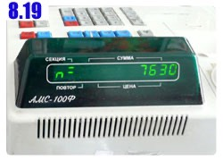
睡前喝了一點酒的關係。半夜渴到醒過來，漆黑的夜裡靠著路過車輛的頭燈照明，摸了半天才拿到水壺喝水止渴。
早上天微亮就起床了，睡在路邊實在顯眼到不行，駕駛只要不是瞎子，每一輛開過去的車都會注意到我，趁著早上車流稀少，不引人側目早點出發。
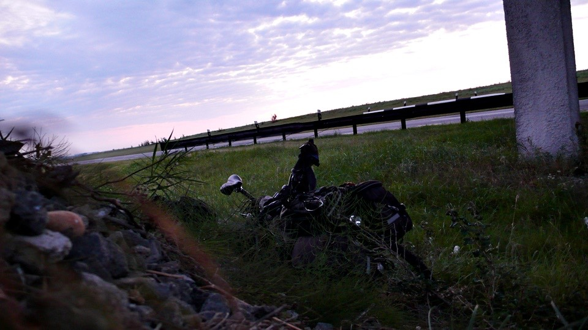
連續露營第六天，應該打破這次旅行以來的記錄了，每天看著日出騎車，看著日落找睡覺的地方，感覺還蠻漂泊的。
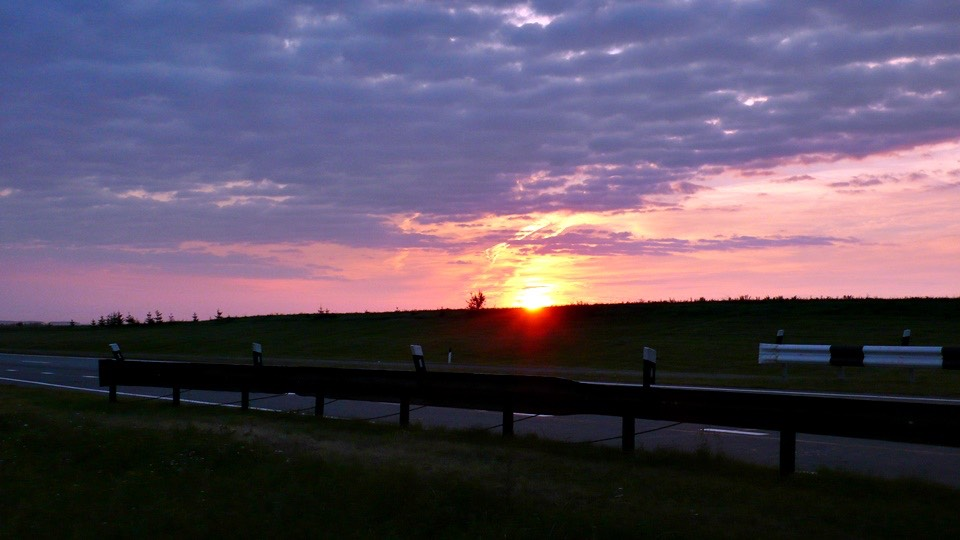
此時距離國境還有兩百六十幾公里，分兩天騎剛剛好。
這樣星期一就可以抵達國境，星期二(二十一號)早上通關，拿出護照確認自己的簽證有效期限，我一直記得是二十二號到期，這樣還蠻有餘裕的。
護照拿出來一看才發現二十一號就是大限之日了，整個很大驚！算得剛剛好在最後一天離開白俄羅斯。
真是好加在這陣子騎車很有效率，不然肯定會因為來不及騎完加上簽證到期，悲慘的停留在這裡。
田裡有一個超大的牛隻看板，用這個當做『注意牛隻』的牌子挺不錯的。
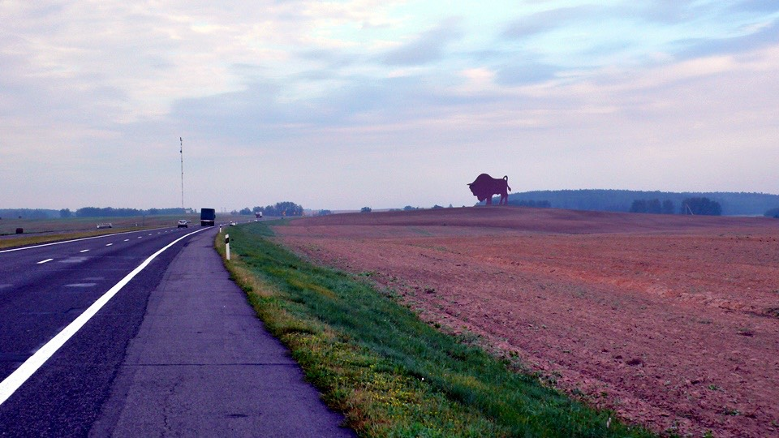
早上涼爽的空氣從起床的十度低溫開始，一整天最熱的時候也不超過二十五度，夜裡真的很冷很冷，真懷疑為什麼不會被凍死。
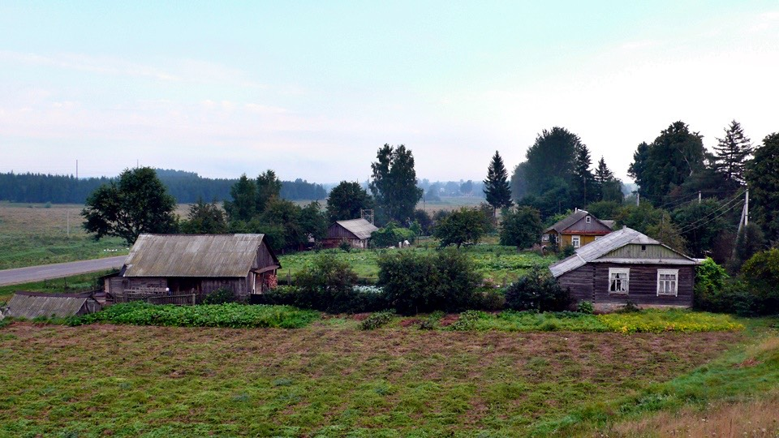
這一路上真是荒涼得可以，只有少數的農家，其它全部都是玉米田、小湖泊、收割完畢的麥田。
很難得才看見一間加油站，今天早上的休息處就是這裡了。
點了簡單的食物，炸肉餅一個就要三千元，還不是現做的，而是微波加熱，配上小小杯的咖啡和五片麵包，這樣要跟我收將近八千元。
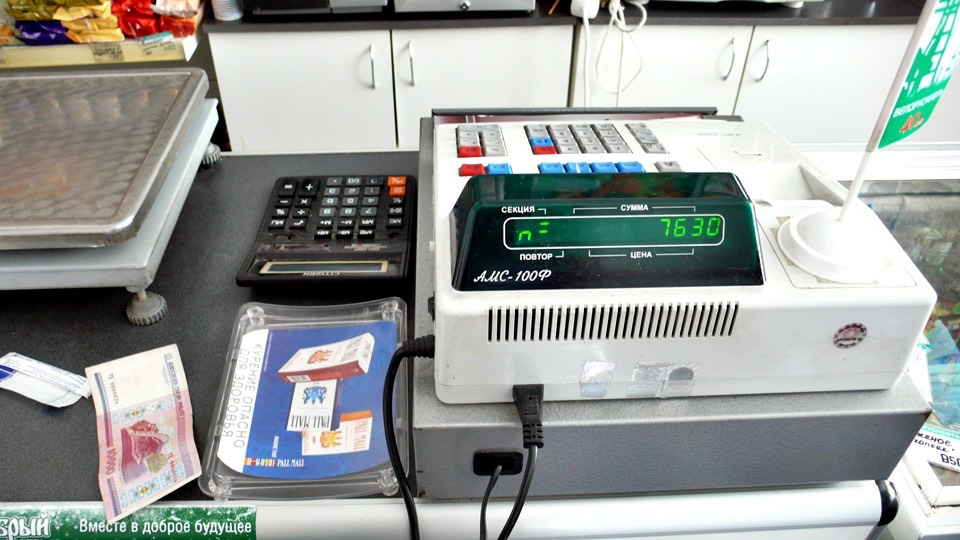
現在一點也不擔心這十一萬會在離開白俄羅斯之前花不完，我反而擔心在這樣的物價水準下，這一些看似很多的錢其實根本就不夠花。
又燒掉了一張一萬元，找回來的零錢中還有十元的紙鈔，這應該是最小面額的貨幣了，最大面額不知道會有多少個零在一張鈔票上。
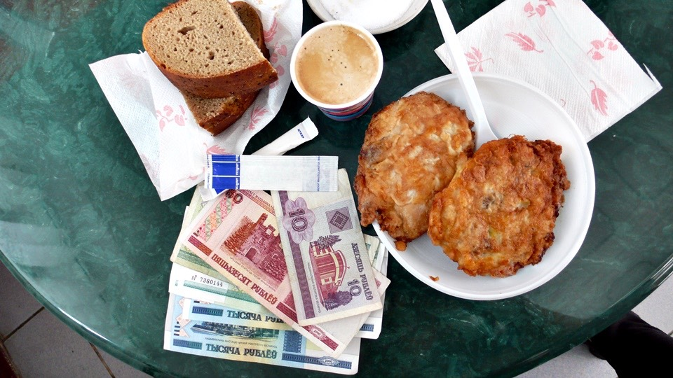
在餐廳或是加油站使用電源之前我都會禮貌性的問一下能不能用？
百分之一百當然都是沒問題，儘管使用吧，唯獨這一間加油站不知道在小氣什麼，盤點冰箱飲料的男員工說不准用。
此刻心裡很自然的冒出一個字，我才知道原來自己的修養這麼差。
轉過頭不理他，去問顧商店的女店員，換個人問答案就不一樣了，又變成儘管使用不打緊。
回答謝謝的時候還故意很大聲地說給小氣的男員工聽。
吃喝完畢繼續騎車，今天是好天氣，想多趕一點路，這樣明天就輕鬆一些，可以在國境找個地方休息一晚上等著通關。
紅色三角形的交通告示牌都是提醒駕駛人『注意』些什麼，這個真的很難懂，注意黑色的點點？
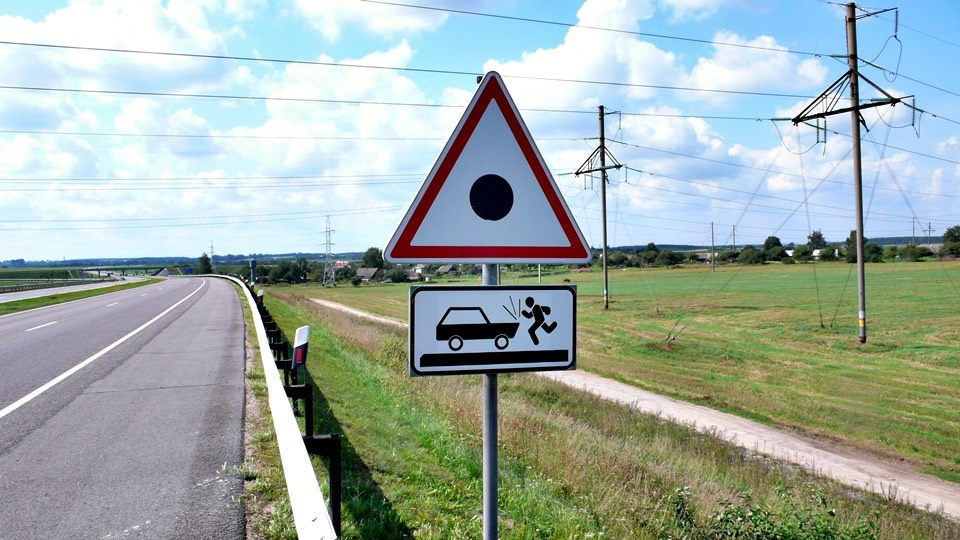
今天比較幸運，發現水龍頭的時候它還可以用，幫浦的設計就是要一直上下的拉把手，水才會流出來。
問題是我負責打水，那自己該怎麼沖水呢？手一停水馬上就跟著停了，試了好幾次總算沖到一點冰涼的地下水，甩甩頭上的水滴繼續上路。
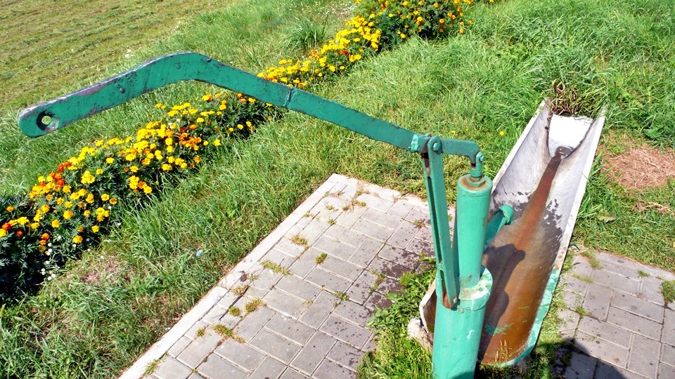
沿路都是很平坦的柏油路，大概新鋪好沒多久而已，連斑馬線都還沒來得及畫。
白俄羅斯沿路都有很多橘紅色的SOS緊急電話，看到這個就想起哈薩克的『前方七十公里有電話』告示牌，漸漸開始有文明歐洲的感覺了。
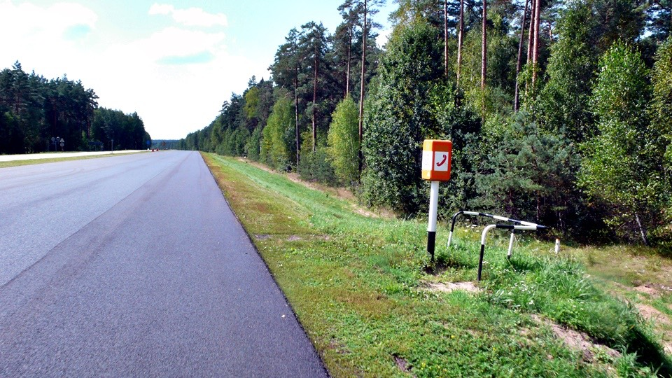
離開早上的加油站之後，除了騎車之外真的沒別的事情可以做，下午三點才終於出現另一個休息區。
地處荒野，偏僻的位置讓本來就很昂貴的物價又往上翻了一倍。
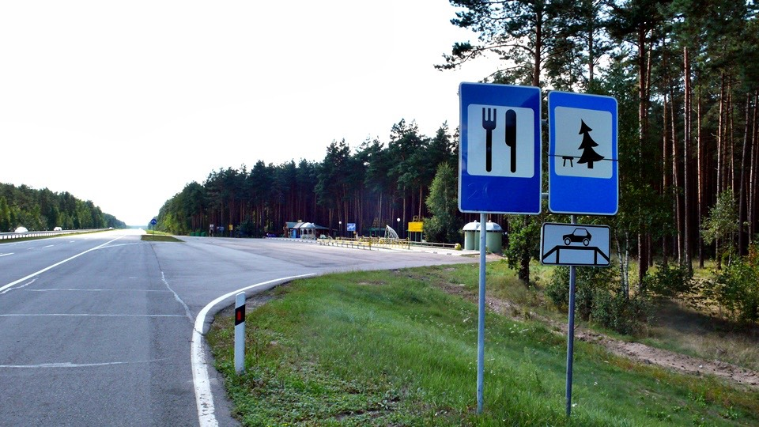
小木屋建造的房舍很不錯，店員也親切，但是物價真是貴得令人吐舌頭。
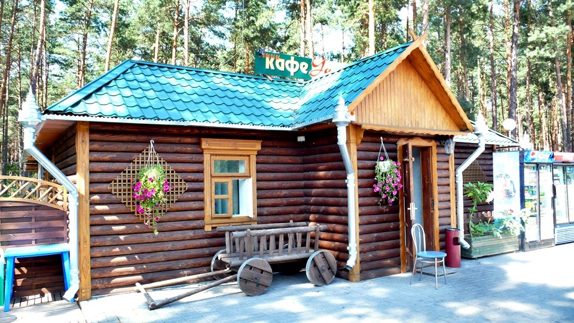
只拿了一瓶果汁和一包洋芋片又燒掉了五千元，在這邊根本就花錢如流水，想要用剩下的錢在布里斯特找一間旅館住一晚上，這個目標好像離我越來越遙遠。
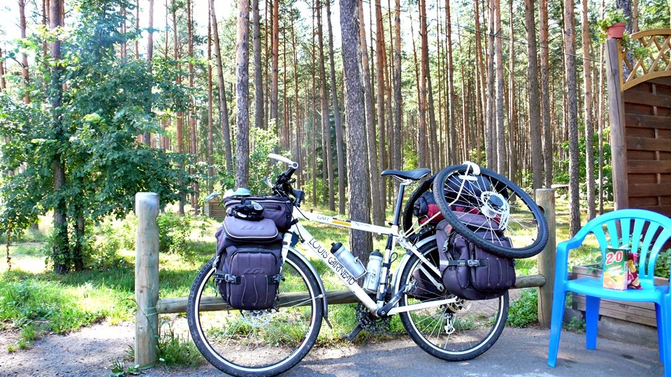
喝果汁吃洋芋片，感覺自己好像在森林風景區，這段路的樹都種得很整齊漂亮，晚上睡在樹林裡也是不錯的選擇。
停靠在這個休息區的都是長途的遊覽車，載著客人往返白俄羅斯和波蘭，既然車輛能夠通行為什麼不讓自行車走呢？
等到國境的時候還要花錢搭接駁車，又要想辦法把小多給扛上小不啦嘰的廂型車裡，光是用想的就覺得很累人。
天空那麼樣的藍，白雲鬆鬆軟軟的，希望這樣的好天氣繼續維持下去。
從白天的氣候來推論晚上可能不會下雨，住在樹林裡的過夜從模糊的想法有了具體的輪廓。
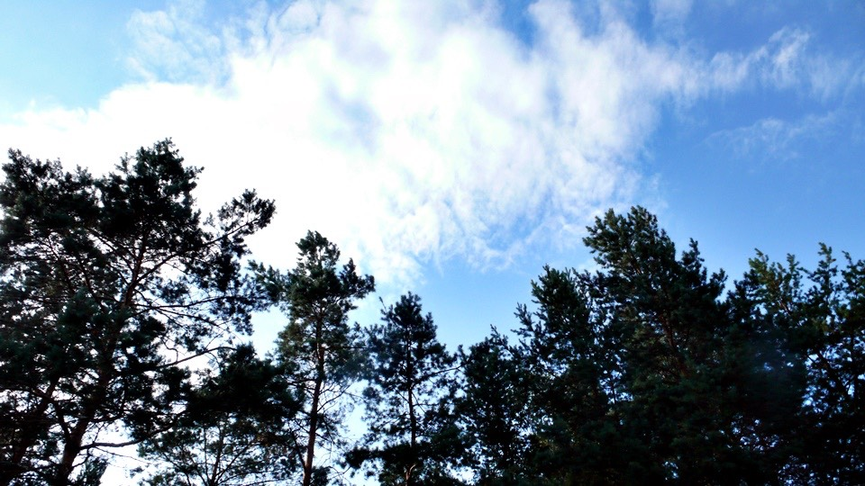
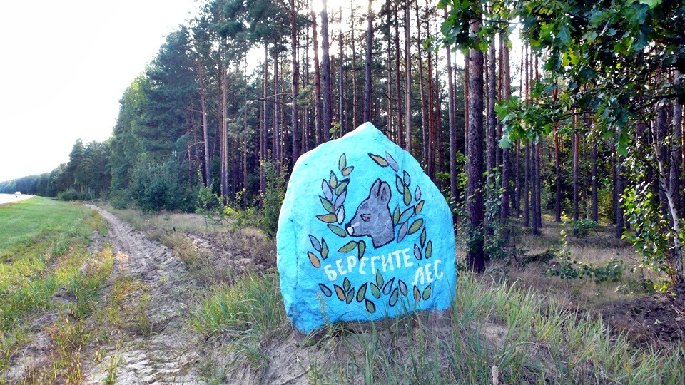
下午將近六點，距離上一個休息區又過了三個小時才出現小餐廳，開放式冰箱裡的就是店裡有供應的餐點。
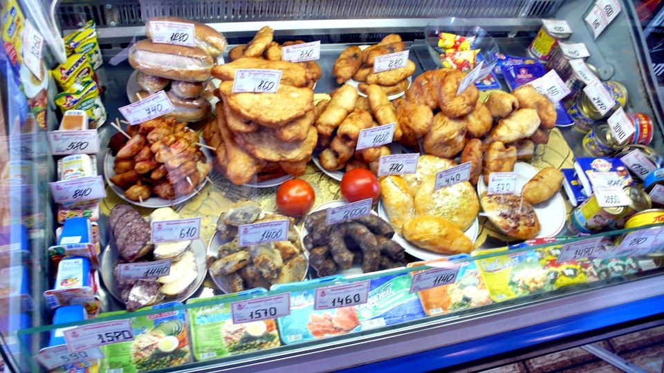
挑了兩個披薩跟一個麵包，配上一瓶可樂當成晚餐解決掉。
咬了兩口才想起來還沒拍照記錄，今天除了吃東西跟騎車之外真是什麼事情也沒發生，平平淡淡的一天就是這種意思吧。
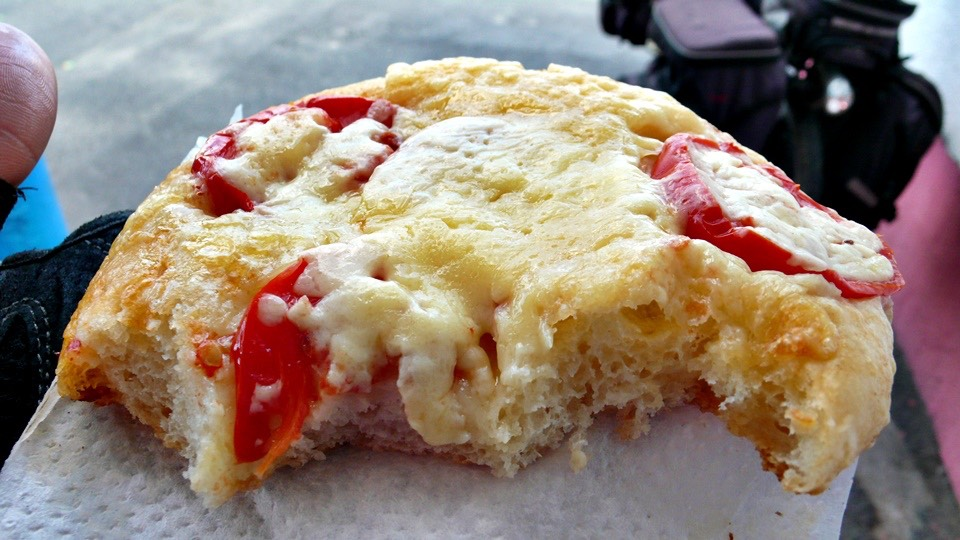
碼表顯示已經超過一百五十公里，這樣明天只需要再騎一百公里多一點就可以抵達，趕路趕得差不多了，該是休息睡覺的時候。
計劃是只要再出現一次餐廳或是加油站，可以讓我買點東西吃那就是今天的過夜處。
想是這麼想，但是接下來的這一路上硬是什麼都沒有，所以就不斷的往前騎，碼錶里程數也依序突破一百六、一百七、一百八、一百九十公里～
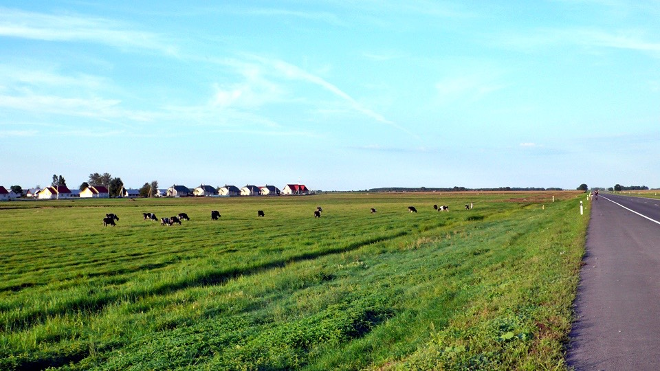
藍天白雲的，這種天氣下雨就太沒道理，找個空地睡一晚上也沒關係。
因為不想讓露營裝備再度受潮，所以麥田、草地這些地方都盡量不考慮，在即將突破兩百公里的那一刻總算出現適合過夜的地方。
看起來只是一般的停車場，有一棟雙拼的小木屋，滿到地上的垃圾桶，一個拼命打水但只會流出鐵鏽色地下水的幫浦。
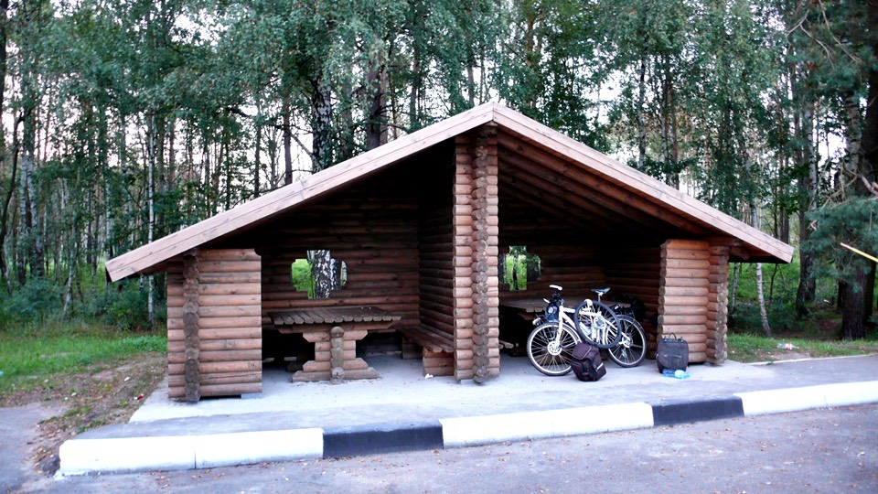
看到今天過夜的地點是小木屋還蠻令人開心的，不僅免費而且又很高級，小多跟包包都放進小木屋裡，想藏也藏不起來，正面太空曠一眼就被看光光。
休息區顧名思義就是誰都可以進來，不是我先到了這裡就變成我的地盤，決定在這裡過夜之後陸陸續續又來了幾輛車，不算是一個平靜的場所。
其中有一輛小轎車是跟隨在我後面進來的，一開始停在遠處打量著我的舉動，看著我在奮力打幫浦的水，然後搖頭放棄。
觀察了一陣子之後他們將車子開近，車上下來四個男生，都是白俄羅斯人，身上飄散著酒味，接下來是好是壞只能隨機應變。
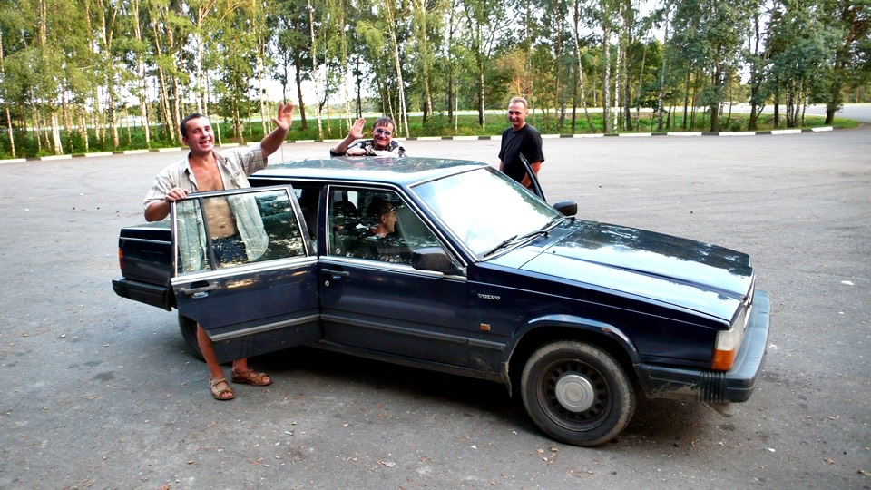
從打招呼的方式看來不太需要擔心他們下一句話是『把值錢的東西都拿出來！』
他們剛才看到我在打水，就從車裡面拿出一個壓得爛爛的寶特瓶給我，裡面可是礦泉水，對於喝了一陣子自來水的我來說真是珍貴。
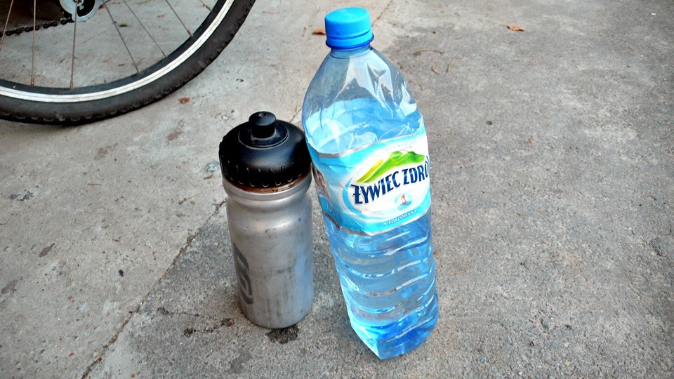
可惜他們沒有要馬上離開的意思，所以我也沒辦法就這麼躺進帳篷睡大覺，只好跟著聊天。
休息區都會掛M1公路的地圖，他們的情報是再往下走一段路就會有城鎮，那邊有旅館可以住，我何必在這裡過夜呢？
我說沒錢呀～只好用露營的方式過得節省一點。
一聽到我沒錢，有一個人就開始掏錢包拿出一大疊的錢來，我心裡想說不會吧？這麼好心要送錢給我？
對方拿著一大疊的錢開始數，最後拿了一張五十元給我，貨幣是白俄羅斯BLR，折合新台幣不到一元，比起我之前在路上撿到的五塊盧布硬幣還要少。
總是對方的心意，微笑的收下來。
其實我心裡是希望他們能夠早點離開，但是他們拿出酒瓶跟一些下酒菜在後車廂就開始喝起了酒。
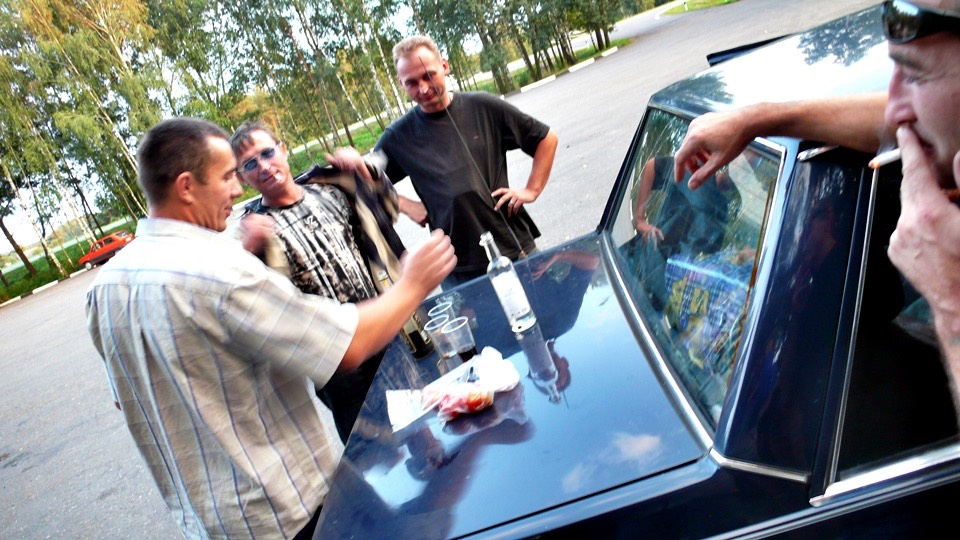
透明的伏特加配上深紅色不知道是什麼的酒，招手叫我過去也喝一點，真是辛辣嗆鼻的味道。
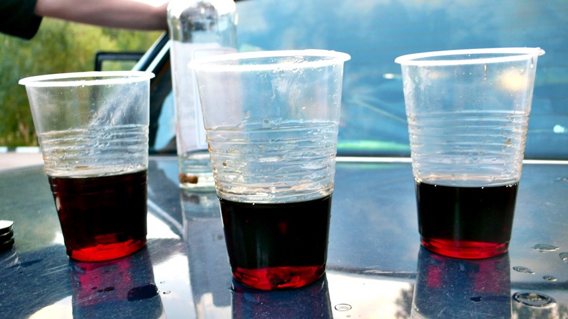
下酒菜只有兩顆番茄、一小塊鹹魚跟一大包他們說是鳥飼料的餅乾渣，吃起來真的就是鳥飼料的感覺，不甜不鹹還很硬。
東聊西扯之下知道他們也要去波蘭，駕駛指著手錶說現在是晚上八點半，搭他們的車，一個小時就可以進入波蘭，問我要不要搭便車？
每次都這樣，搭便車不論要去哪邊都是一下子就可以到，自己騎車還得花上半天的時間。
但是當然揮揮手表示拒絕，就快到國境了，不差這一天，再說搭喝醉酒的人開的車實在太危險了，不知道他們這沿路邊喝酒邊開車跑了多遠？
九點多，總算他們喝光了所有的酒，打算要離開，四個人裡有兩個人連站都站不穩，我還得幫忙扶他們進車子裡頭。
該怎麼說呢～一樣是愛喝酒，俄羅斯人跟白俄羅斯人喝醉之後的態度不會變得很惡劣，本來個性就不壓抑的民族喝醉之後還是那樣的豪邁。
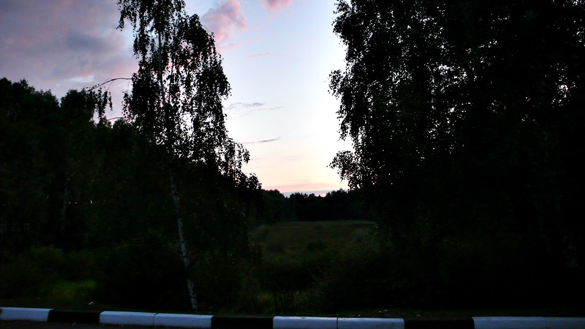
晚上睡在小木屋裡，外觀看起來蠻高級，其實難睡到不行，蚊子數量太多了一點，才換上睡衣不到一分鐘，身上就被叮了十個包。
木頭椅子也很硬，鋪上睡墊還是睡得不安穩，晚上一直有車輛進入休息區，還有媽媽很緊張地跟爸爸說：『小木屋裡有屍體！』
小孩很興奮地說我要看！我要看！接著是爸爸拿著手電筒小心翼翼的向我走過來，強烈的光照得我眼睛都睜不開。
最後爸爸向大家宣布只是一位落難的單車旅行者在露營，媽媽鬆了一口氣，小孩則顯得很失望。
在帳篷裡目睹這一切的我只覺得好氣又好笑，心裡想說你們玩夠了沒呀？到底什麼時候才要走，我只想睡覺呀@@"
白天是那樣好的天氣，晚上風雲變色，無情的下著大雨，除了疑惑這詭異的天氣怎麼變化得如此快速，也慶幸今天不是睡在樹林裡淋雨。
在相當難睡的小木屋翻來覆去的，數著一輛輛進來又離開的汽車，明天就可以到國境了，今天是連續露營的第七天，該是找張柔軟的床睡覺的時候。
繼續閱讀：8.20 極限的味道
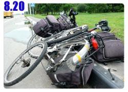
俄羅斯-盧布－ 1：1.3 台幣
8.19
總計：240元
加油站炸肉餅、麵包、咖啡7640元、西瓜葡萄汁2260元、休息站果汁、洋芋片4840元、下午茶汽水、披薩、麵包4400元。總計19140BLR，折合盧布240元